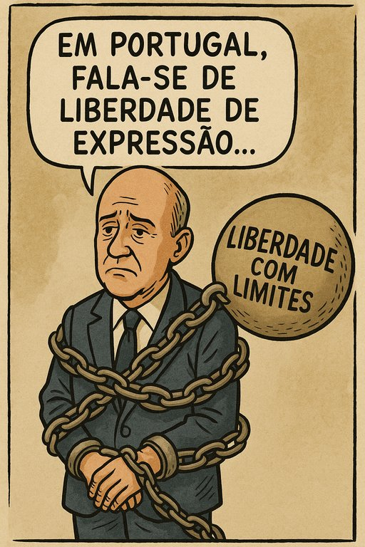

Publicado em 2025-07-12 17:31:45
Quando se observa o mediatizado caso Joana Marques vs. Anjos (Nélson Rosado), em que a sátira humorística deu origem a um processo judicial e ao envolvimento de figuras como Tony Carreira como testemunha, o que salta verdadeiramente à vista não é a pequena guerra de sensibilidades. O que sobressai — como uma cicatriz mal curada — é o modo como a sociedade portuguesa continua a tropeçar na sua própria conceção de liberdade de expressão.
Vivemos, de facto, num regime democrático. Mas será que pensamos democraticamente? É aqui que mora o verdadeiro problema.
A liberdade de expressão, tal como os princípios constitucionais a definem, não é absoluta, sim — mas tampouco é um campo minado onde qualquer crítica se transforma em delito de opinião. No entanto, em Portugal, há um padrão insidioso a emergir: discursos e críticas são cada vez mais filtrados por suscetibilidades pessoais, por moralismos de ocasião ou por indignações seletivas, normalmente amplificadas por bolhas digitais e órgãos de comunicação formatados.
Vivemos num tempo em que se confunde ofensa com dano, e onde a resposta à crítica tende a ser um apelo ao silêncio alheio. O debate de ideias deu lugar ao tribunal da honra ferida.
Portugal nunca fez uma verdadeira catarse do salazarismo. A liberdade chegou por decreto, mas não por evolução cultural. Muitas escolas libertaram os corpos, mas esqueceram de abrir as janelas da mente. Formaram-se técnicos, mas não cidadãos. Produziram-se alunos, mas não pensadores.
E assim, a sombra do lápis azul continua a pairar, mas agora disfarçada de tribunal mediático, de correção política sem reflexão, de indignação partilhada nas redes, de julgamentos sumaríssimos sem contraditório. Troca-se o argumento pelo ataque pessoal, o diálogo pela denúncia moral. Não se discute, cancela-se.
Parte desta crise vem da ausência de uma literacia cívica básica. Não se ensina a diferença entre dano real e ofensa subjetiva. Entre liberdade e impunidade. Entre crítica e ataque gratuito. A ausência de uma verdadeira Escola de Cidadania é talvez o maior défice estrutural da democracia portuguesa. Um défice que se traduz em intolerância, agressividade, silêncio cúmplice e na incapacidade crónica de ouvir o outro sem preparar de imediato o contra-ataque.
É isso que está a custar caro a Portugal. Uma democracia de fachada, onde os rituais existem, mas a alma ainda está entorpecida. Onde se vota, mas não se participa. Onde se reclama liberdade, mas não se compreende o seu preço: a responsabilidade.
Este caso, como tantos outros, é apenas o palco. O que se encena ali é um velho dilema nacional: a dificuldade em lidar com a diferença, com o humor, com a crítica, com a liberdade. Um país verdadeiramente democrático aceita o desconforto da diversidade de opiniões. Um país adulto não se ofende por sistema. Aprende. Ri-se. Debate. Cresce.
Enquanto não houver investimento sério numa cultura democrática — nas escolas, nas famílias, na comunicação social, na política — continuaremos a produzir cidadãos órfãos de pensamento crítico. E quando não se pensa, o caminho mais curto é sempre o da censura, da reação emocional, da justiça como palco, da moral como escudo.
Portugal precisa de um novo 25 de Abril. Não nas praças, mas nas consciências. Uma revolução que nos ensine que a liberdade não se agradece — exerce-se. Que a democracia não se impõe — aprende-se. E que a ofensa, por vezes, é apenas o espelho onde a nossa vaidade se recusa a reconhecer o que ainda nos falta ser.
Enquanto não dermos esse passo, continuaremos, como diria o poeta, a ser um povo que se encolhe diante da sua própria sombra.